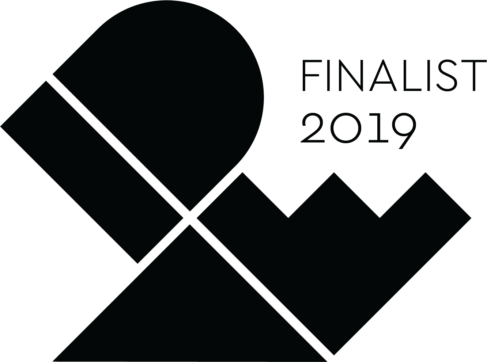
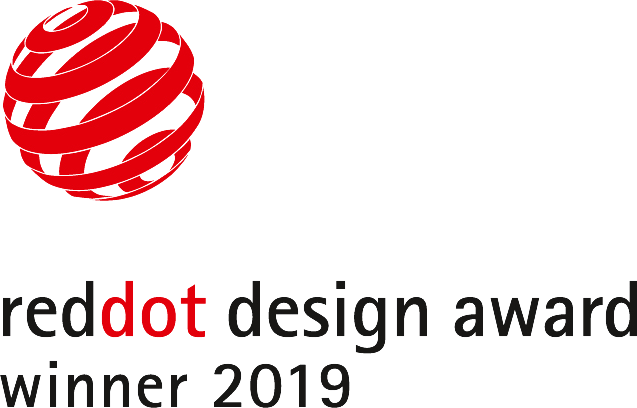
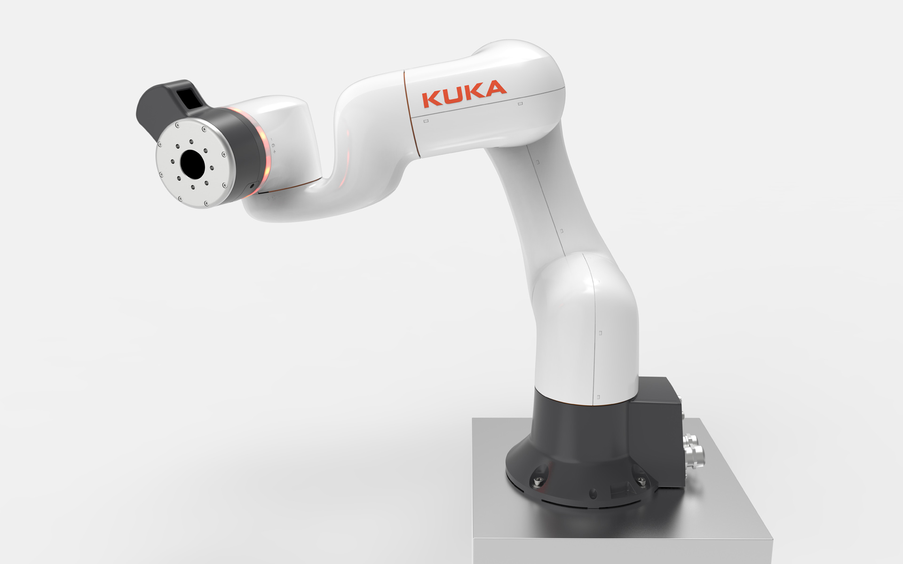

KUKA LBR iisy
Small Robot
KUKA LBR iisy
Kleinrobotik
The LBR iisy is a sensitive, precise and easy-to-use robot that makes automation even more intuitive and opens up new areas of human-robot collaboration.
It has high-grade joint torque sensors in all axes, which react to the slightest external forces and offer
certified collision protection. Its 3kg payload and 600mm reach are optimized for narrow spaces, whether
it's loading, unloading, packaging, assembling mounting and difficult tasks in Research + Development.
The LBR iisy is ready for operation immediately, can be quickly and easily reprogrammed for a new task.
Its intuitive, easy to learn programming of movement sequences is done by manually guiding the robot at
its ergonomically integrated commander. In the case of unplanned interruptions, it remembers every
movement that has taken place and can immediately resume work without re-learning.
Its supple, organic design prevents bruising and offers maximum protection. In order to give the robot a
signature and brand-typical look, its appearance is characterised by gentle edges that are clearly
visible but cannot be felt by the operator.
Selić Industriedesign service: Design concept, design consultation, design sketches, CAD design support,
CAD freeform modeling, design refinement, processing of design data for the engineering department
Der LBR iisy ist ein sensitiver, präziser und leicht bedienbarer Roboter, der die Automatisierung noch intuitiver gestaltet und neue Bereiche der Mensch-Roboter-Kollaboration erschließt.
Er besitzt in allen 6 Achsen hochwertige Gelenkmomentensensoren, die auf geringste Kräfte von außen
reagieren und zertifizierten Kollisionsschutz bieten. Seine 3 kg-Traglast und die 600mm-Reichweite sind
auf Tätigkeiten in engen Räumen optimiert, ob Bestücken, Entnehmen, Verpacken, zuverlässiges Montieren
oder diffizile Arbeiten in der Forschung.
Er ist sofort einsatzbereit, kann schnell und einfach für eine neue Aufgabe umprogrammiert werden. Seine
Intuitive Programmierung von Bewegungsabläufen erfolgt durch manuelles Führen des Roboters an seinem
ergonomisch integrierten Commander. Bei ungeplanten Unterbrechungen merkt er sich jede ausgeführte
Bewegung und kann ohne erneutes Anlernen sofort die Arbeit wieder aufnehmen.
Sein geschmeidiges, organisches Design vermeidet Quetschungsgefahren und ist auf maximalen Schutz
abgestimmt. Um dem Roboter ein markantes und markentypisches Wiedererkennungsmerkmal zu geben, wurden
sanfte Kanten modelliert, die gut sichtbar, aber für Anwender nicht spürbar sind.
Selić Industriedesign Dienstleistung: Designkonzept, Designberatung, Designentwürfe,
CAD-Designunterstützung, CAD-Freiform-Modellierung und Detailgestaltung, Aufbereitung von Designdaten
für die Konstruktion

Images © Selić Industriedesign